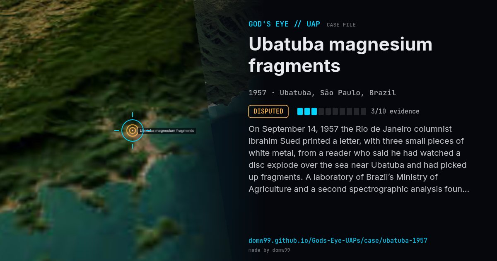

Ubatuba magnesium fragments

On September 14, 1957 the Rio de Janeiro columnist Ibrahim Sued printed a letter, with three small pieces of white metal, from a reader who said he had watched a disc explode over the sea near Ubatuba and had picked up fragments. A laboratory of Brazil’s Ministry of Agriculture and a second spectrographic analysis found the metal to be extremely pure magnesium. Ufologists, among them James Harder, argued that purity that high was hard to make at the time; later analyses of the isotopes gave normal Earth ratios, and the origin of the pieces remains unproven.
Explanation
The fragments are real and were analysed, but the story of their origin rests on a letter from an unnamed reader. Later isotope analyses found ordinary terrestrial magnesium, and sceptics regard the tale as a hoax.
What was seen
Shape: Disc that exploded over the sea (as told)
Witnesses: A fisherman and friends (reported in a letter)
Duration: Seconds
Sources
Browse
- Brazil
- 1950s
- Disputed
- Landing and trace cases
- Official government documents
- Physical traces
- Discs and saucers